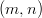

4.2.4 Beam Search Procedures with Insertion Technique
Beam Search procedures are a heuristic variant of the Branch & Bound Procedure (→4.1.1).
In contrast to them, the number of investigated partial solutions is limited in any vertex of the
solution tree. This leads to an incomplete search in the set of feasible solutions which can possibly
exclude all optimal solutions. However, such procedures are substantially faster than a branch &
bound algorithm. The quality of the solution depends both on the chosen problem type and on the
chosen parameters.
In case of an insertion procedure, the sequence in which the operations are added to a partial
sequence is settled in advance. For any partial sequence and any new operation, several feasible
positions are considered at which the new operation with one of the possible ranks can be inserted.
In addition to the insertion procedure, an appending procedure (→4.2.3) is also implemented in
LiSA.
Invocation
After the input of the problem type and the required parameters, one chooses Heuristic
Algorithms/Beam Search (insert) in the menu Algorithms.
Settings
-
Beam width:
- Here one fixes how many of the partial sequences generated in any step are
considered further.
-
Insertion order:
- Here the sequence is fixed in which the operations are added to the partial
sequences.
- MACHINEWISE: The operations are sequenced column-wise.
- DIAGONAL: This strategy is based on the consideration of the diagonal in a
square of the size M = min
 .
.
- QUEEN_SWEEP: This strategy is based on the consideration of independent
sets as solutions of a M queens problem on a M × M chess board (M =
min ).
- RANDOM: The operations are inserted in random order.
- LPT (longest processing time): The operations are ordered according to
decreasing processing times.
- ECT (earliest completion time): The operation to be inserted next is chosen
in such a way that the completion time for the new partial schedule becomes
minimal. In contrast to all other strategies for selecting an insertion order, this
selection is not globally made. In any step, for each partial sequence considered,
the operation is determined which is inserted next.
- SPT (shortest processing time): The operations are ordered according to
increasing processing times.
-
Selection method:
- Here one fixes how the chosen number of partial sequences investigated
further (beam width) is selected. The partial sequences are evaluated by their objective
function values.
- INSERT1: From the set of all child-sequences in one step, select the best ones.
- INSERT2: For any parent-sequence, exactly one (best) child-sequence is chosen,
independently whether this is globally promising or not.
-
Selection criterion:
- This option is only available for Cmax problems. It gives an alternative
evaluation method for partial sequences.
- OBJECTIVE: The objective function value is used for evaluating a partial
sequence. This is the standard method.
- CLAST: A partial sequence is evaluated by the cost of a longest path through
the operation which has been inserted last.
Invocation in the Autoalg input file
In the input file for the Autoalg-function (→7.3), beam search insertion procedures are
activated as follows:
<CONTROLPARAMETERS>
string AUTOALG_EXECUTABLE beam
string MODE INSERT
string INS_ORDER LPT
string INS_METHOD INSERT1
string CRITERION OBJECTIVE
long k_BRANCHES 5
</CONTROLPARAMETERS>
The sequence in which the parameters are passed is irrelevant. In case of optional parameters, here
the default-value is given.
As an executable file, beam must be invoked for all beam search procedures. The information on
the beam search mode is mandatory as it is for the insertion order. Optionally, the parameters
for the selection method, the selection criterion, and the beam width can be
set.